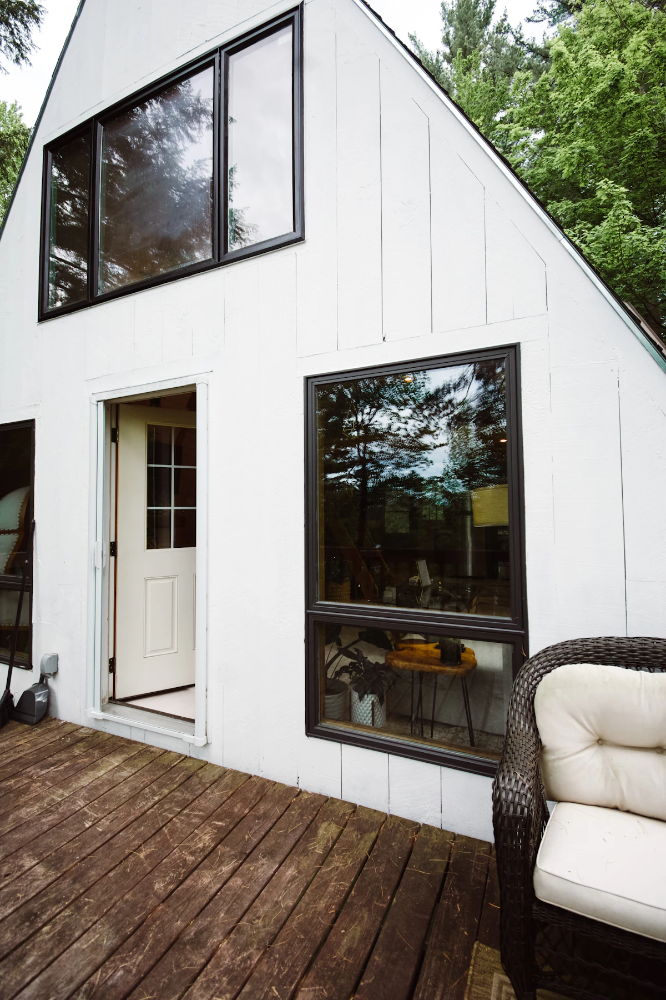

Vrata
Ulazna vrata ostavljaju prvi dojam. Opišite kakav izgled želite i što vam je važno u svakodnevnoj uporabi.
Pošaljite upit
Prozori. Dom. Okolica Düsseldorfa.
Prozori utječu na svjetlost, izgled i ugođaj doma. TLM Bauelemente – prozori za vaš dom u okolici Düsseldorfa.
TLM Bauelemente / Novi pogled na vaš dom.
U okolici Düsseldorfa
01 / Usluge
Više dnevnog svjetla, otvoren pogled i skladan izgled doma. Što vam je važno pri odabiru novih prozora?

Prozor povezuje unutarnji i vanjski prostor. Pri odabiru prozora važni su raspored prostorija, izgled kuće i način na koji koristite svoj dom.
Kako dnevno svjetlo ulazi u vaš dom? Veličina i raspored prozora čine razliku.
Jednostavne linije ili prozori s prečkama: odabir prozora oblikuje izgled pročelja.
Jedan prozor ili veći zahvat? Opišite nam što biste željeli promijeniti.
Ulazna vrata ostavljaju prvi dojam. Opišite kakav izgled želite i što vam je važno u svakodnevnoj uporabi.
Pošaljite upitŽelite povezati dom s terasom ili vrtom? Opišite kakvu kliznu stijenu zamišljate.
Pošaljite upitViše privatnosti ili manje jutarnjeg svjetla? Opišite što očekujete od roleta.
Pošaljite upitU kojim vam prostorijama smeta izravno sunce? Opišite gdje vam je potrebna zaštita.
Pošaljite upitImate pitanja o ugradnji? Opišite što treba ugraditi i kakvo je postojeće stanje.
Pošaljite upitPlanirate zamjenu postojećih prozora ili vrata? Opišite trenutačno stanje i željene promjene.
Pošaljite upit02 / O tvrtki TLM Bauelemente
Prozor je dio vaše svakodnevice. Zato dobar projekt počinje pravim pitanjima.
TLM Bauelemente bavi se stolarijom u okolici Düsseldorfa, s naglaskom na prozore. Što biste željeli promijeniti? Što vam je posebno važno u vašem domu?
Vaše želje i postojeće stanje polazište su za razgovor o mogućim rješenjima. U upitu nam ukratko predstavite svoj projekt.
TLM BauelementeProzori u okolici Düsseldorfa
03 / Inspiracija
Pogledajte kako prozori oblikuju izgled kuće i ugođaj interijera. Pronađite ideje za svoj dom.

04 / Od ideje do projekta
Ovako može izgledati suradnja. Usluge i tijek suradnje dogovaraju se prema potrebama vašeg projekta.
Opišite svoj projekt i navedite što vam je važno.
U razgovoru se razjašnjavaju vaše želje, moguća rješenja i otvorena pitanja.
U ponudi se navode dogovorene usluge i uvjeti.
Prihvatite li ponudu, dogovaraju se daljnji koraci i termini.
Prostor za vaše ideje
Svaki projekt počinje idejom. Podijelite svoju s nama.
05 / Kontakt
Planirate nove prozore ili imate pitanje? Ukratko nam opišite što vas zanima.
Područje djelovanja
U okolici Düsseldorfa
Opišite svoj projekt. Polja označena zvjezdicom (*) obvezna su.